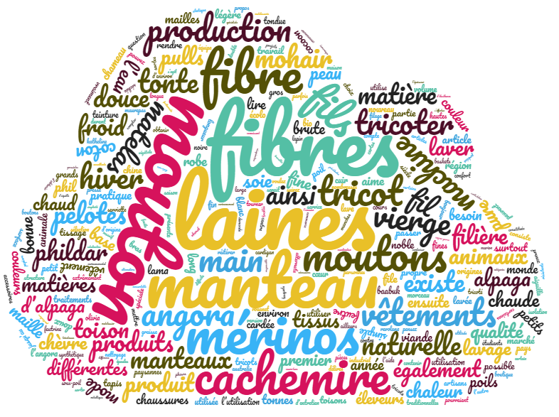

English
English Français
FrançaisOur word clouds
Word clouds analysis in Albanian (source : Tagul)

We created the cloud from the contexts files. Therefore the results are different from those with Trameur. We find the words " lesh/leshi/leshit" (wool), "plis/plisi" (wrinkle), "dele/deleje" (sheep), "fije" (thread), "tuba" (ball) et "triko" (knitted sweater). We can easily see the tyheme of winter through words like "kohë" ("weather"), "dimër" (winter), ngrohtë (warm), "dorë" (hands), "brenda" (inside). The word "stil" (style) is connected to the theme of fashion which is in also in the results with Trameur.
Word clouds analysis in Arabic (source : Word Clouds)

The cloud in Arabic gives us an almost complete result about the theme of wool. We noted the presence of the following words: صوف , the arabic word for wool, which is the big green word. Around this word we can see the words صناعة (industry), خيوط (thread), اللباس (clothes), السجاد (carpet), النسيج (weaving), الشتاء (winter), أبيض (white), النساء (women), الغنم (sheep), جز (mow). These key words show us the different contexts of wool, from the sheep that is the origin of this product until the transformation of this product into clothes. These results are quite the same as those with Trameur. Here is a schema whith the different stages of the processing of wool : the wool comes from the sheep to be sheared; women are responsible for cleansing bleaching; wool is transformed into yarns through industry; these yarns will be woven to give carpets or clothes for the winter. Here is the schematic representation of the processing of wool :
sheep → mow→ woman→ white→ industry→ thread→ weaving→ carpet→ clothes→ winter
Word clouds analysis in French (source : Word Clouds)

Our cloud in French gives us a complete result about the theme of wool. We noticed a strong occurrence of the word wool with a rate of 989. This word is surrounded by words like: sheep, merinos, cashmere, angora, fibers, yarn, knitting, production, clothing, coat. These key words show us the different stages of wool production, starting from the different types of animals until the transformation of this product into clothes. The results of the cloud seem to be similar to those with Trameur.